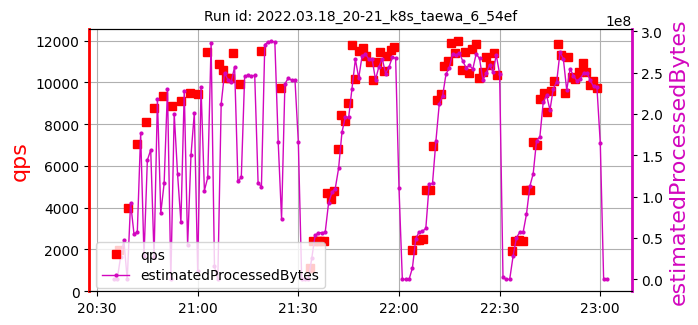
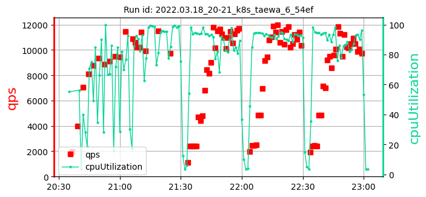
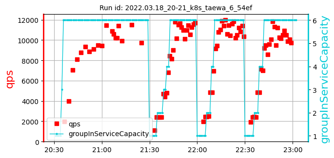
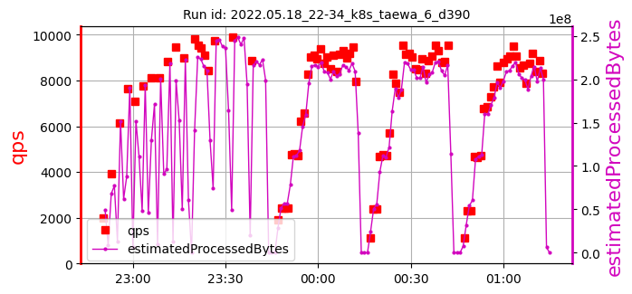
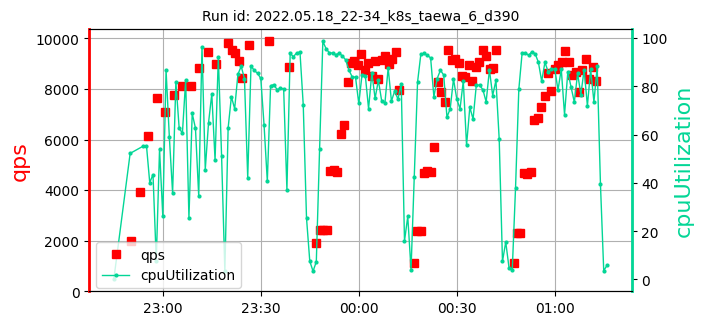
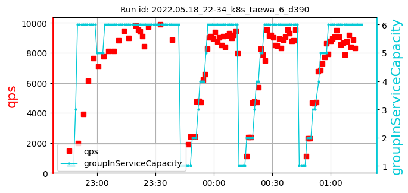

k8s_taewa_6_samples: 2date: 2022-06-13 12:34:46.681295 | max: 743 min: 529 mean: 686 |
max: 11522 min: 8859 mean: 9945 |
max: 99.01 min: 79.48 mean: 91.86 |
max: 346 min: 136 mean: 241 | ||
| 1: 2022.03.18_20-21_k8s_taewa_6_54ef | cpu=70 pods=12 treads=25 sc_min=25 warmup=90 | Dura-tion s | qps | CPU % | Err | |
|  |  |  | [712, 529, 710] 650 | [9923, 11522, 9722] 10389 | [99.01, 95.46, 98.71] 97.73 | 136 |
| 2: 2022.05.18_22-34_k8s_taewa_6_d390 | cpu=70 pods=12 treads=25 sc_min=25 warmup=90 | Dura-tion s | qps | CPU % | Err | |
|  |  |  | [743, 676, 742] 721 | [9734, 9909, 8859] 9501 | [85.08, 79.48, 93.43] 86.00 | 346 |
k8s_taewa_6_samples: 2date: 2022-06-13 12:34:46.681295 | max: 743 min: 529 mean: 686 |
max: 11522 min: 8859 mean: 9945 |
max: 99.01 min: 79.48 mean: 91.86 |
max: 346 min: 136 mean: 241 |